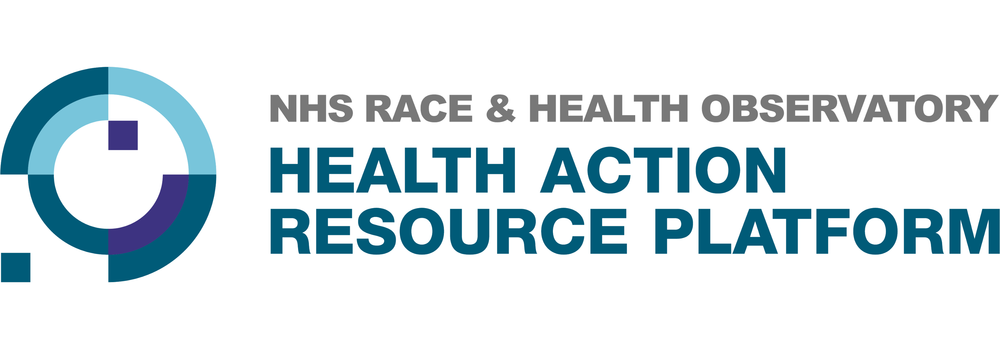
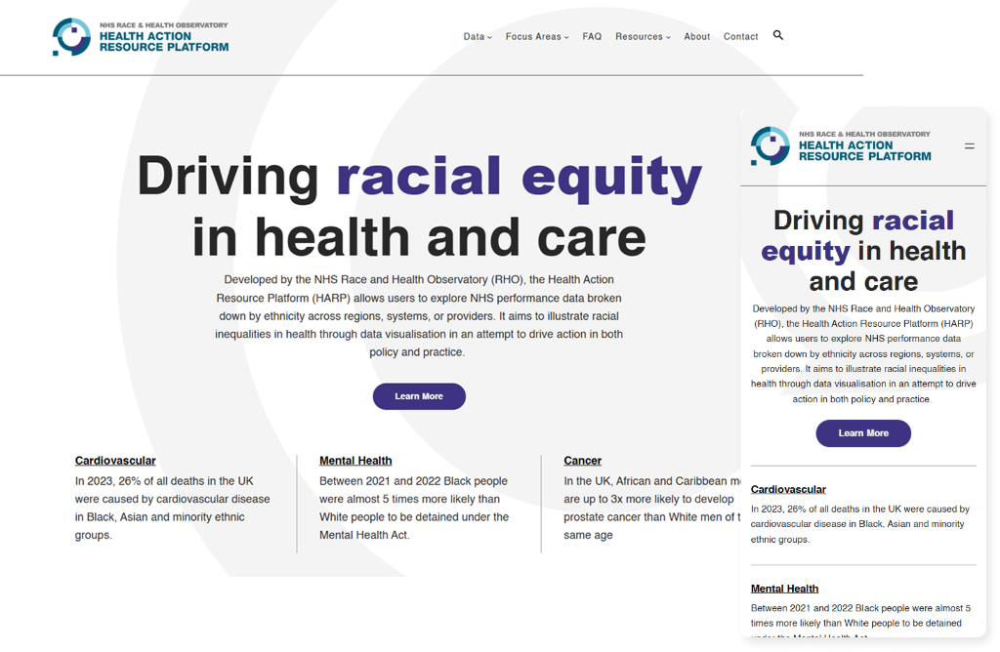

Health Action Resource
Platform (HARP)

Client
NHS Race & Health Observatory
Tasks
Discovery & Research, User Segmentation, Roadmap, Stakeholder Management, Agile Delivery, AI Integration.
Time
2024 - Present
Role
Product Manager / Product Owner
Tools
Link/s

Overview
The Organisation
The NHS Race and Health Observatory exists to shine a light on racial health disparities and drive systemic change across the NHS. HARP — the Health Action Resource Platform — is their flagship digital product: a national tool that connects NHS staff with ethnicity data, peer-reviewed replicable practices, and the implementation resources they need to act on what they find.
It launched in June 2025 with an ambitious brief. Become the definitive national source for health equity evidence. Close the gap between data and action. It is one of the most meaningful products I have worked on.


The Start
I joined as Product Owner, but it quickly became clear that the role needed to be broader. There was no structured backlog, no validated user understanding, and priorities were pulling in too many directions. The foundational product work — strategy, user research, stakeholder alignment — had not been done. Delivery couldn't move without it.
"I pivoted into a hybrid Product Manager and Product Owner role — stabilising the strategic foundations while keeping a firm grip on backlog ownership and delivery."
That meant doing both jobs at once: running discovery, establishing a north star metric framework, aligning stakeholders on scope, and writing the backlog — all while maintaining the day-to-day discipline of story refinement, sprint planning, and developer handoffs. It was a broader remit than originally scoped, and exactly what the product needed.
The Research
The original segmentation wasn't working
When I joined, HARP's intended audience was defined by job titles: researchers, managers, frontline staff, contributors. It was a reasonable starting point — but job titles don't tell you how someone actually uses a digital tool. Building for "a Trust manager" means building for nobody in particular.
I designed and led a full user research programme. I conducted Repertory Grid interviews and persona interviews with 20 NHS participants — two structured sessions per person. The Repertory Grid technique is particularly powerful here: it surfaces how people construct their own sense of value without the interviewer leading the conversation. Participants define what matters to them, in their own words.
I scored responses across 18 distinct perceived user value dimensions, then ran cluster analysis across both the quantitative scores and qualitative themes to group participants by how they actually behave — not what their job title says. The result was four validated behavioural segments, each with a detailed persona capturing their goals, pain points, workarounds, and the specific value they need from the platform.
20
NHS Participants Interviewed
18
User Value Dimensions Scored
4
Behavioural Segments Identified
Each segment occupies a distinct position in the data-to-action pipeline that HARP is designed to bridge. These personas now underpin every product decision — from how data is displayed to how a replicable practice is structured. When we debate a feature, we debate it against a real behavioural profile, not a job title.
The Validation
Before committing the third-party development team to one of HARP's more technically complex features, I built a working AI prototype independently. The goal was twofold: validate the concept with potential users before any significant resource was committed, and surface critical unknowns before discovery sessions with the dev team began — so we arrived with evidence, not assumptions.
Critically, the prototype was framed by the research I had already done. That grounding kept it focused. Without it, AI-assisted development has a habit of producing something bloated — too many features, too little clarity. The prior research meant every decision in the build had a reason.
It worked. Putting something real in front of users early generated genuine feedback that shaped the main build. It also reduced the time and cost of discovery with the development team. We entered the build with far more validation than we would have had going in cold.
"Building the prototype myself meant the development team spent less time in exploratory discovery and more time building. It is one of the clearest examples I have of how a PM with the right technical instincts can directly reduce delivery risk and cost."
The Work
Ideation & Feature Discovery
Led structured ideation sessions to identify and define new platform features grounded in user research and strategic goals.
Roadmap Prioritisation
Defined and maintained a prioritised roadmap, making sequencing decisions tied directly to the north star metric and segment needs.
Backlog Ownership
Wrote and maintained the full product backlog — epics, user stories, and feature reports structured for both human and AI-assisted development.
North Star Framework
Established the metric framework that connects every feature decision to platform-level impact and product strategy.
Every feature decision on HARP is grounded in the segmentation research. Every story is written so a developer — human or AI — can pick it up and build without needing to chase context across documents. That discipline is deliberate. It is what makes delivery predictable.
"Working on HARP has reminded me why product management matters. This is a platform that could genuinely change how the NHS identifies and closes racial health inequalities. I'm proud to be part of it."
.png)